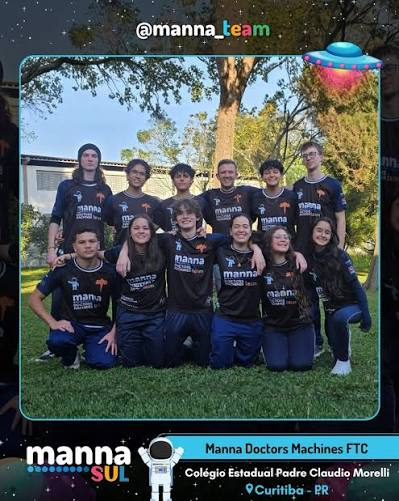

Festa Junina do 3º Ano
Sempre gostei de festa junina. Teve uma muito legal no meu 3º ano do fundamental que eu dancei e foi bem dahora! Uma das melhores lembranças.
"Deus acima de tudo"
Um resgate cronológico da minha trajetória.
Sempre gostei de festa junina. Teve uma muito legal no meu 3º ano do fundamental que eu dancei e foi bem dahora! Uma das melhores lembranças.

Um momento complicado onde focar foi o maior desafio. Porém, meus pais me ajudaram bastante a prestar atenção e focar nos estudos, superando as dificuldades.

O melhor projeto extracurricular! Construí robôs, aprendi a mexer com ferramentas, elétrica e CAD. Uma experiência que marcou minha vida escolar.

Não é um momento específico, mas ter a consciência da importância da escola é muito legal. Foi aqui que aprendi tudo o que sei hoje.
17 redações desenvolvidas nas aulas de Língua Portuguesa e Redação.